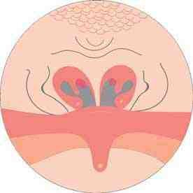

Словарь: З
- Задержанная вызванная отоакустическая эмиссия
- Вид вызванной отоакустической эмиссии, при котором в качестве стимула используется широкополосный щелчок. В норме регистрируется в 100% случаев; при нейросенсорной тугоухости амплитуда ответа снижается или ответ отсутствует.не из КР: Пальчун В. Т., Лучихин Л. А., Магомедов М. М. «Руководство по практической оториноларингологии» (М.: МИА, 2010), с. 100
- Задержка развития
- термин, используемый для описания детей, физическое развитие которых, в первую очередь рост, ниже ожидаемого (failure to thrive – в англоязычной литературе).Хроническая болезнь почек, «Термины и определения»
- Задняя риноскопия
- Осмотр задних отделов полости носа и носоглотки (эпифарингоскопия) подогретым носоглоточным зеркалом диаметром 6–10 мм, которое заводят за мягкое нёбо; корень языка отдавливают шпателем.не из КР: Пальчун В. Т., Лучихин Л. А., Магомедов М. М. «Руководство по практической оториноларингологии» (М.: МИА, 2010), с. 22
- Задняя стенка полости носа
- представлена хоанами.Рак полости носа и придаточных пазух, «Термины и определения», с. 4
- Задняя тампонада
- Остановка носового кровотечения, когда передняя тампонада неэффективна: марлевый тампон на нитках (по Беллоку) с помощью катетера, проведённого через нос в ротоглотку, заводят через рот за мягкое нёбо и прижимают к хоане; нити выводят через нос и фиксируют, затем выполняют переднюю тампонаду.не из КР: Пальчун В. Т., Лучихин Л. А., Магомедов М. М. «Руководство по практической оториноларингологии» (М.: МИА, 2010), с. 241–242
- Задняя ушная артерия
- Артерия, которая вместе с поверхностной височной артерией снабжает кровью ушную раковину. От неё отходит шилососцевидная артерия, главная артерия среднего уха. Ветви артерий ушной раковины не окружены подкожной жировой клетчаткой, поэтому раковина особенно подвержена отморожению.не из КР: Гайворонский И. В. и соавт. «Функциональная анатомия ЛОР-органов» (СПб.: СпецЛит, 2022), с. 58, 68 PDF
- Закрытая гнусавость
- Изменение речи при затруднении носового дыхания: затруднено произношение сонорных звуков («ан», «ен», «он» и т. д.) из-за нарушения резонаторной функции носа. Её наблюдают при аденоидах, хоанальном полипе и других препятствиях в носу.не из КР: Бабияк В. И., Накатис Я. А., Говорун М. И. «Оториноларингология. Руководство», т. 1 (СПб.: Питер, 2009), с. 106
- Закрытая и открытая техники санирующей операции
- При закрытой технике (canal wall up) заднюю костную стенку наружного слухового прохода сохраняют, при открытой (canal wall down) удаляют её вместе с латеральной стенкой аттика (scutum). Открытая техника даёт лучший обзор барабанной полости, сосцевидного отростка и аттика, но формирует операционную полость, за которой требуется уход; при закрытой слуховой проход остаётся нормальным (для детей), но возможны необходимость повторной операции и рецидив холестеатомы.не из КР: Probst R., Grevers G., Iro H. «Basic Otorhinolaryngology: A Step-by-Step Learning Guide» (Thieme), с. 255 PDF; Watkinson J. C., Clarke R. W. (eds). Scott-Brown’s Otorhinolaryngology, Head and Neck Surgery, 8th ed., vol. 2, p. 204 (PDF)
- Закрытый перелом нижней челюсти
- вид перелома, при котором не возникает сообщения щели перелома с внешней средой через рану кожи, рану (разрыв) слизистой оболочки полости рта, либо через периодонтальную щель зуба.Множественные переломы мозгового и лицевого черепа, «Термины и определения», с. 5
- Затемнение околоносовых пазух
- Рентгенологический признак воспаления. Отёк и утолщение слизистой оболочки дают в просвете пазухи «вуаль», а заполнение пазухи экссудатом или гноем — интенсивное затенение. В вертикальном положении головы жидкость стекает вниз, и виден её уровень в виде дуги, вогнутой книзу.не из КР: Бабияк В. И., Накатис Я. А., Говорун М. И. «Оториноларингология. Руководство», т. 1 (СПб.: Питер, 2009), с. 258
- Затянувшийся острый средний отит 2 значения
- 1Затянувшийся острый средний отит – определяют наличие симптомов воспаления среднего уха в течение 3-12 месяцев после одного или двух курсов терапии антибиотиками.Отит средний острый, «Термины и определения», с. 5В разборах: Отит средний острый
- 2определяют наличие симптомов воспаления среднего уха в течение 3-12 месяцев после одного или двух курсов терапии антибиотиками.Отит средний острый, «Термины и определения», с. 5В разборах: Отит средний острый
- Заушный доступ RAHI
- Доступ через разрез в заушной и затылочной областях по линии роста волос (retroauricular hairline incision; по типу face-lift); при удалении кист шеи и слюнной железы вмешательство выполняют под контролем эндоскопа или хирургического робота.не из КР: КР «Кисты челюстно-лицевой области и шеи», раздел 3.4, с. 32–33
- ЗВОАЭ сокращение
- задержанная вызванная отоакустическая эмиссияПотеря слуха, вызванная шумом, «Список сокращений», с. 4
- Звукопроведение
- Процесс поступления звуковой энергии к рецепторам улитки. Различают воздушный (трансмиссионный), тканевый и тубарный типы звукопроведения.не из КР: Бабияк В. И., Накатис Я. А., Говорун М. И. «Оториноларингология. Руководство», т. 2 (СПб.: Питер, 2009), с. 322
- Зигоматицит
- Воспаление клеточной системы скулового отростка при переходе на неё воспалительного процесса. Проявляется болями и болезненностью при надавливании в области скулового отростка, припухлостью мягких тканей, смещением ушной раковины книзу и кнаружи; отоскопически характерно опущение верхней стенки костного отдела слухового прохода.не из КР: Нацруководство «Оториноларингология» под ред. В. Т. Пальчуна, гл. 11 «Болезни уха», раздел «Мастоидит»
- Злокачественный наружный отит
- Быстро распространяющаяся влажная гангрена, поражающая ушную раковину и наружный слуховой проход; выявляется главным образом при истощающих заболеваниях. В большинстве случаев возбудителем является синегнойная палочка.не из КР: Нацруководство «Оториноларингология» под ред. В. Т. Пальчуна, гл. 11 «Болезни уха», раздел «Злокачественный наружный отит»
- ЗНО сокращение 4 значения
- 1Злокачественный (некротизирующий) наружный отитНаружный отит у детей, «Список сокращений», с. 4В разборах: Наружный отит у детей
- 2злокачественные новообразованияРак полости носа и придаточных пазух, «Список сокращений», с. 3; Рак носоглотки у детей, «Список сокращений», с. 4В разборах: Рак полости носа и придаточных пазух, Рак носоглотки у детей
- 3злокачественное новообразованиеРак носоглотки, «Список сокращений», с. 4В разборах: Рак носоглотки
- 4злокачественный наружный отитНаружные отиты, «Список сокращений», с. 4В разборах: Наружные отиты
- Золотой грузик
- Золотой (или титановый) груз, который помещают в верхнее веко для защиты роговицы при параличе лицевого нерва и несмыкании глаза.не из КР: Probst R., Grevers G., Iro H. Basic Otorhinolaryngology (Thieme), с. 294 (PDF 304); Watkinson J. C., Clarke R. W. (eds). Scott-Brown’s Otorhinolaryngology, Head and Neck Surgery, 8th ed., vol. 3, с. 1385
- Зона Киссельбаха
- Участок в переднем отделе перегородки носа (Little's area), где под слизистой оболочкой лежит поверхностная сеть артериальных сосудов с небольшим количеством эластических и мышечных волокон в стенках. Поэтому именно здесь чаще возникают носовые кровотечения: при небольших травмах, подъёме артериального давления, атрофии и сухости слизистой оболочки.не из КР: Бабияк В. И., Накатис Я. А., Говорун М. И. «Оториноларингология. Руководство», т. 1 (СПб.: Питер, 2009), с. 50
- Зондирование пазух
- Введение зонда через естественное соустье пазухи после тщательной анемизации и анестезии слизистой оболочки остиомеатального комплекса. Для лобной пазухи применяют S-образно изогнутую зонд-канюлю Риттера; усилие применять нельзя, так как легко сделать ложный ход.не из КР: Пальчун В. Т., Лучихин Л. А., Магомедов М. М. «Руководство по практической оториноларингологии» (М.: МИА, 2010), с. 199
- Зондирующий тон
- Звук определённой частоты, который подают в наружный слуховой проход при импедансометрии; отражаясь от барабанной перепонки, он несёт информацию об импедансе звукопроводящей системы. Обычно используют частоту 220 Гц (по данным разных авторов 220–660 Гц); у детей раннего возраста применяют высокочастотный зондирующий тон.не из КР: Бабияк В. И., Накатис Я. А., Говорун М. И. «Оториноларингология. Руководство», т. 2 (СПб.: Питер, 2009), с. 423–424; Probst R., Grevers G., Iro H. Basic Otorhinolaryngology (Thieme), с. 184
- ЗОСО сокращение
- затянувшийся острый средний отитОтит средний острый, «Список сокращений», с. 4
- Зуб крысы
- Название конфигурации рабочих браншей щипцов для извлечения инородных тел («зуб крысы», «зуб аллигатора», «зуб акулы»). Стандартные биопсийные щипцы из-за небольшой ширины раскрытия редко бывают успешны и не рекомендуются.не из КР: КР «Инородное тело в пищеварительном тракте», раздел 3.2, с. 37
- Зубоальвеолярный сегмент
- условная единица объёма альвеолярной части челюсти для оценки распространённости инфекционно-воспалительного процесса. Нижней границей зубоальвеолярных сегментов бокового отдела нижней челюсти является канал нижней челюсти (canalis mandibulae), переднего отдела — виртуальная горизонтальная плоскость, соединяющая подбородочные отверстия. Верхней границей зубоальвеолярных сегментов верхней челюсти является дно полости носа и верхнечелюстных синусов.Воспалительные заболевания челюстей у детей, «Термины и определения», с. 4
- Зубочелюстная аномалия (деформация)
- диспропорция развития (соотношения) челюстей, которая характеризуется функциональными и эстетическими нарушениями. Аномалии и деформации могут затрагивать верхнюю и нижнюю челюсти, скуловые кости, структуры носа и другие кости лицевого черепа.Аномалии и деформации зубочелюстной системы и лицевого черепа, «Термины и определения», с. 5
